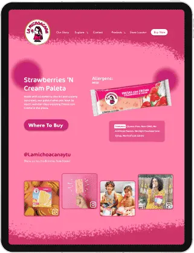
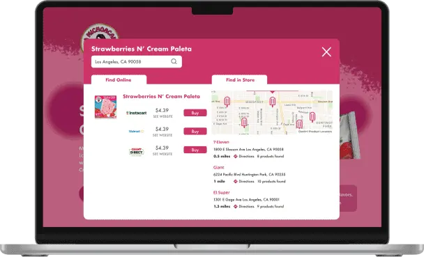
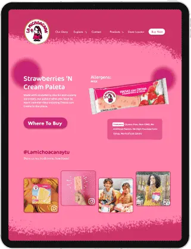
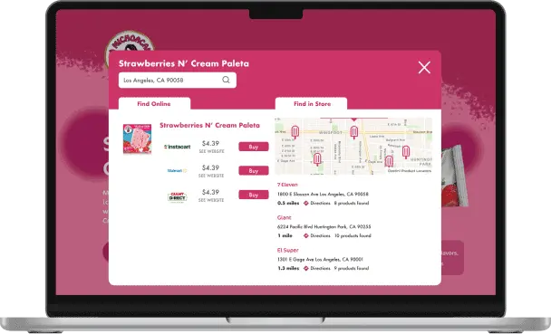

Projects
PhillyReach
PhillyReach is a centralized program finder website for youth in Philadelphia, made to address the lack of resources for working adults and parents.
 



La Michoacana
I redesigned La Michoacana's website design and information architecture across three interfaces, significantly enhancing the customer experience.
Inkling
I created a high-fidelity Figma mock-up and Ae prototype for my Micro-interaction class, showcasing the user flow of a college student using the "Inkling" journal app I designed.
Best Fronds
Collaborating with a fellow team member I researched, iterated and designed a physical product and Figma app prototype targeting the lack of botanical literacy in college students.